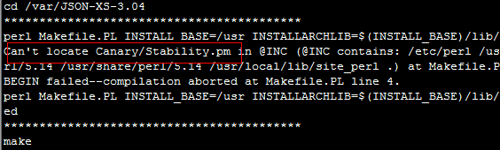

在线安装
参考：http://search.cpan.org/~andk/CPAN-2.16/lib/CPAN.pm
离线安装
从cpan下载的开源库，有两种方式编译：Makefile.PL或Build.PL
参考：http://search.cpan.org/~andk/CPAN-2.16/lib/CPAN.pm
perl Makefile.PL perl Build.PL
make ./Build
make test ./Build test
make install ./Build install
更多编译参数，参考：
http://search.cpan.org/~leont/Module-Build-0.4224/lib/Module/Build.pm
http://search.cpan.org/~bingos/ExtUtils-MakeMaker-7.34/lib/ExtUtils/MakeMaker.pm
安装到其它环境
如果有这种场景：当前环境只是编译环境，而实际需要将开源库安装到另一个运行环境才能使用。
可以通过指定Makefile.PL或Build.PL的参数来实现。
perl Build.PL --destdir=$DestDir
perl Makefile.PL INSTALL_BASE=$INSTALL_BASE
自制安装脚本
针对离线安装，自制cpan_module_install.sh，仅供参考：
#!/bin/bash
function log_cmd()
{
cmd=$1
echo "******************************************"
echo $cmd
$cmd || (echo "$1 failed" && exit 1)
}
function install_init()
{
ModuleName=$1
if [ ! -d "/var" ]; then
log_cmd "mkdir /var"
fi
log_cmd "tar zxvf $ModuleName -C /var"
log_cmd "cd /var/${ModuleName%%.tar.gz}"
}
function install_clean()
{
ModuleName=$1
cd -
log_cmd "rm -rf /var/${ModuleName%%.tar.gz}"
echo "install success: ${DestDir:=/}"
}
function build()
{
DestDir=$1
if [ -z $DestDir ]; then
log_cmd "perl Build.PL --install_base=/usr --install_path arch=/usr/lib/perl5"
else
log_cmd "perl Build.PL --install_base=/usr --destdir=$DestDir --install_path arch=/usr/lib/perl5"
fi
log_cmd "./Build"
if [ -z $DestDir ]; then
log_cmd "./Build test"
fi
log_cmd "./Build install"
}
function makefile()
{
DestDir=$1
INSTALL_BASE=/usr
if [ ! -z $DestDir ]; then
INSTALL_BASE=$DestDir/usr
fi
log_cmd "perl Makefile.PL INSTALL_BASE=$INSTALL_BASE INSTALLARCHLIB=\$(INSTALL_BASE)/lib/perl5 INSTALLSITEARCH=\$(INSTALL_BASE)/lib/perl5 INSTALLVENDORARCH=\$(INSTALL_BASE)/lib/perl5"
log_cmd "make"
if [ -z $DestDir ]; then
log_cmd "make test"
fi
log_cmd "make install UNINST=1"
}
###############################################################################
function print_help()
{
echo "Usage: $0 -s aaa.tar.gz"
echo " $0 -s aaa.tar.gz -d /var/install_tmpdir"
echo " -s the package file"
echo " -d specify the folder to do a temp install"
}
function main()
{
if [ $# -eq 0 ]; then
print_help
exit 1
fi
while getopts "s:d:h" arg #选项后面的冒号表示该选项需要参数
do
case $arg in
s)
ModuleName=$OPTARG
;;
d)
DestDir=$OPTARG
;;
h)
print_help
exit 1
;;
?) #当有不认识的选项的时候arg为?
print_help
exit 1
;;
esac
done
if [ -z $ModuleName ]; then
print_help
exit 1
fi
install_init $ModuleName || exit 1
if [ -f "Build.PL" ]; then
build $DestDir
elif [ -f "Makefile.PL" ]; then
makefile $DestDir
else
echo "该安装包不正确，缺少Build.PL和Makefile.PL"
fi
install_clean $ModuleName
}
main $*
执行./cpan_module_install.sh -h即可查看使用方法
./cpan_module_install.sh -s 源码包 -d目标路径
库依赖
离线安装时，单个下载的源码库，会依赖其它库，在make test时会报错：

这说明缺少Canary::Stability，需要到cpan继续搜索Canary::Stability，然后按照离线方式安装后，再安装当前模块，如果还有错误，则继续安装。
PS：如果使用cpan_module_install.sh，建议首次不指定-d参数，这样会执行make test检查错误。
库依赖批量安装
当库依赖比较多时，而每次都是人工安装到当前环境，但是如果要安装到其它环境，即cpan_module_install.sh指定-d参数时，又需要重新执行一遍安装，比较麻烦。 这里再提供一个自制脚本批量安装install.sh：
#!/bin/bash
#说明：该脚本用于安装有依赖的组件包，第一个参数给一个配置文件，文件内容是按照依赖顺序列出的要安装的cpan模块，如
# a.tar.gz
# b.tar.gz
# ...
#如果某个包的安装有选择提示，可以增加一个选择文件，文件名为：包文件名.sel，如a.tar.gz.sel
#文件内容每一行都是一个选择，编译时，会按照这些选择逐个输入，如：
# y
# n
# y
# yes
# ...
config=$1
dest_dir=$2
if [ -z $config ]; then
echo "Usage: $0 config_file installdir"
exit 1
fi
for pkg in `cat $config`; do
echo -e "\033[32m install $pkg \033[0m"
if [ -z $dest_dir ]; then
if [ -f $pkg.sel ]; then
RES=`cat $pkg.sel | ./cpan_module_install.sh -s $pkg 2>&1| grep 'Result:'`
else
RES=`./cpan_module_install.sh -s $pkg 2>&1| grep 'Result:'`''
fi
if [ "${RES}" == "Result: FAIL" ]; then
echo -e "\033[31m x $RES \033[0m"
exit 2
fi
echo $RES
else
if [ -f $pkg.sel ]; then
cat $pkg.sel | ./cpan_module_install.sh -s $pkg -d $dest_dir
else
./cpan_module_install.sh -s $pkg -d $dest_dir
fi
fi
done
该脚本第一个参数是一个配置文件，按照顺序记录依赖库的安装顺序，每个依赖库源码包一行，例如：
module.list
Canary-Stability-2012.tar.gz
Types-Serialiser-1.0.tar.gz
JSON-XS-3.04.tar.gz
执行安装：
./install.sh module.list /home/myroot
将会把所有模块安装到/home/myroot，如果不指定第二个参数，则在当前系统安装。